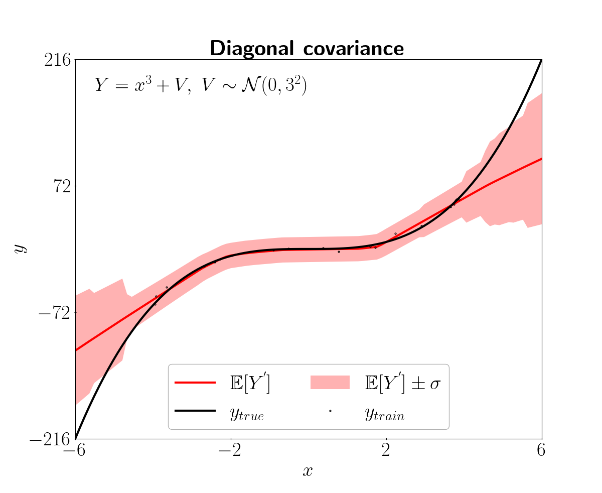

In this tutorial, we will see how to use pyTAGI to solve a simple regression problem. We will use a 1D toy dataset and a feedforward neural network (FNN) with a simple architecture.
In this simple example, we will use a 1D toy dataset. The dataset is composed of 10 training and 100 test observations.
# User-input
num_inputs = 1
num_outputs = 1
num_epochs = 50
x_train_file = "./data/toy_example/x_train_1D.csv"
y_train_file = "./data/toy_example/y_train_1D.csv"
x_test_file = "./data/toy_example/x_test_1D.csv"
y_test_file = "./data/toy_example/y_test_1D.csv"
We will use a FNN with a simple architecture. We will use the RegressionMLP class explained here.
# Model
net_prop = RegressionMLP() #MLP model configuration
We will use the RegressionDataLoader class explained here to load and process the data.
# Data loader
reg_data_loader = RegressionDataLoader(num_inputs=num_inputs,
num_outputs=num_outputs,
batch_size=net_prop.batch_size)
data_loader = reg_data_loader.process_data(x_train_file=x_train_file,
y_train_file=y_train_file,
x_test_file=x_test_file,
y_test_file=y_test_file)
Using the regression class that makes use of TAGI, we will train the model using analytical inference and then and test it.
# Optional: Visualize the test using visualizer.py
viz = PredictionViz(task_name="regression", data_name="toy1D")
# Train and test
reg_task = Regression(num_epochs=num_epochs,
data_loader=data_loader,
net_prop=net_prop,
viz=viz)
reg_task.train() #Train by infering parameter values
reg_task.predict(std_factor=3) #plot 3σ confidence region
*PredictionViz class in here
The results are shown in the following figure. The black line is the true function, the red line is the predicted function and the red zone is the confidence intervals.

The model has one input layer, one hidden layer and one output layer. The input layer has a single variable, the hidden layer has 50 hidden units and the output layer has one variable. The activation function of the hidden layer is ReLU and the batch size is four. The observation noise’s standard deviation and its minimum are 0.06 so that the decaying scheduler is disabled. When one wish to use a scheduler to decrease sigma_v over epochs, sigma_v_min should be choosen to be smaller than sigma_v (Note: this is commonly the case for CNNs).
# Model
from pytagi import NetProp
class RegressionMLP(NetProp):
"""Multi-layer perceptron for regression task"""
def __init__(self) -> None:
super().__init__()
self.layers = [1, 1, 1] # [input layer, hidden layer, output layer]
self.nodes = [1, 50, 1] # [#inputs, #hidden units, #outputs ]
self.activations = [0, 4, 0] # [~, ReLU activation, ~ ]
self.batch_size = 4 # Number of observation per batch
self.sigma_v = 0.06 # Observation error's standard deviation
self.sigma_v_min: float = 0.06 # Min. observation error's std for the scheduler
self.device = "cpu" # CPU computations